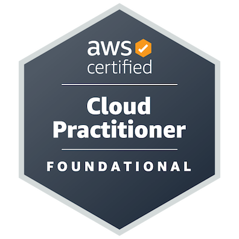
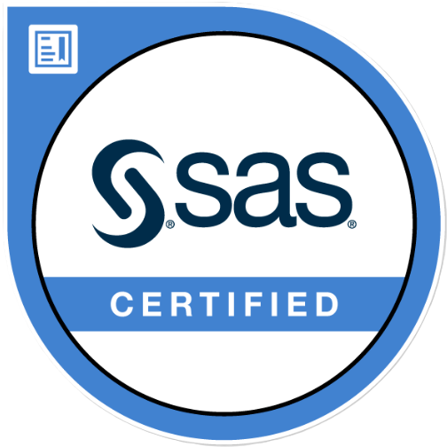
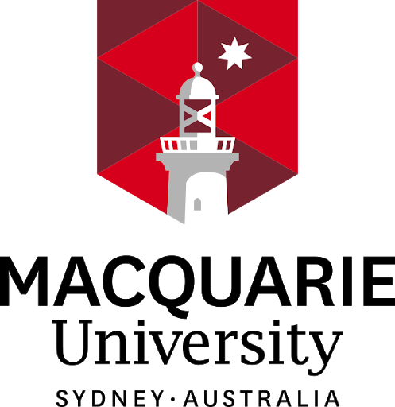
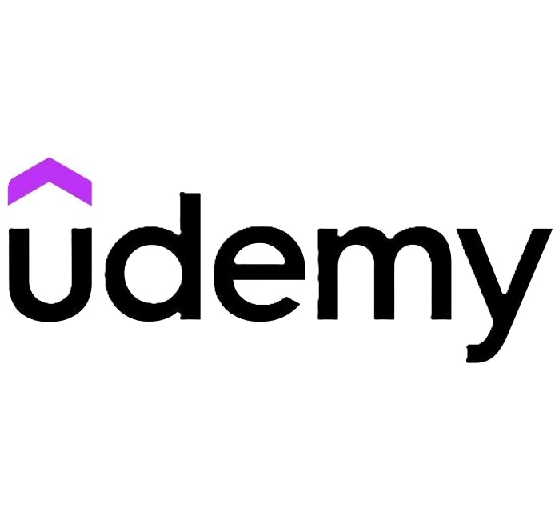

01 / FEATURED APP · ANDROID
WisePick
Co-developed an Android app that helps people understand their phone habits through unlock check-ins, customizable pickup reasons, and daily insights. Available on Google Play.
HELLO, I’M
Python Backend Developer · AWS
I build and support Python backend systems on AWS for LPL Financial through Perficient, from scheduled workflows and performance tuning to releases and production support.
Reliable systems. Thoughtful code. Real impact.
01 / SELECTED WORK
01 / FEATURED APP · ANDROID
Co-developed an Android app that helps people understand their phone habits through unlock check-ins, customizable pickup reasons, and daily insights. Available on Google Play.
Advanced AI system to classify and detect wildfires using ResNet-50.
A Python backend for ETF research, portfolio tracking, and investment simulations, with persistent storage, cached market data, and automated tests.
A developer tool that turns a project folder or uploaded file into a structured Markdown report, with a FastAPI backend and server-side AI integration.
Advanced framework for improving adversarial robustness in text classification models.
Comprehensive analysis of 30 years of Premier League data using SAS.
02 / EXPERIENCE
Client: LPL Financial · Fort Mill, SC · Account System of Record (SOR)
Joined as Associate Technical Consultant in September 2025; promoted to Technical Consultant in October 2026.
03 / TOOLKIT
My current work centers on Python services, serverless workflows, database performance, and reliable delivery on AWS.
My previous analytics work and computer science studies also included:
04 / RESEARCH BACKGROUND
Earlier work in computer vision gave me experience implementing experiments, testing across datasets, and evaluating results. Today, my professional focus is backend software and cloud systems.
March 2025
Fire and smoke phenomena pose a significant threat to the natural environment, ecosystems, and global economy, as well as human lives and wildlife. In this particular circumstance, there is a demand for more sophisticated and advanced technologies to implement an effective strategy for early detection, real-time monitoring, and ...
05 / EDUCATION
Clemson University — Clemson, SC
Aug 2023 - May 2025 | GPA: 3.80
Academic focus: Data Science
Clemson University — Clemson, SC
Aug 2023 - Jul 2024 | GPA: 3.83
Mumbai University — Mumbai, IND
Aug 2016 - Oct 2020 | GPA: 3.20
06 / CREDENTIALS

AWS
May 2025

SAS
Dec 2023

Macquarie University
Jul 2020

UCDavis
Sep 2020
May 2021
May 2021

Udemy
Aug 2022
Oct 2023